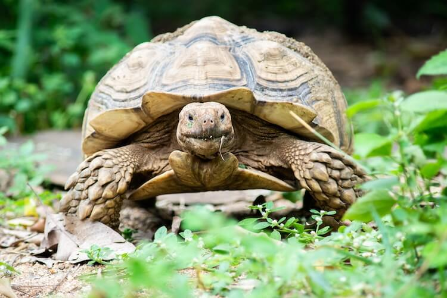
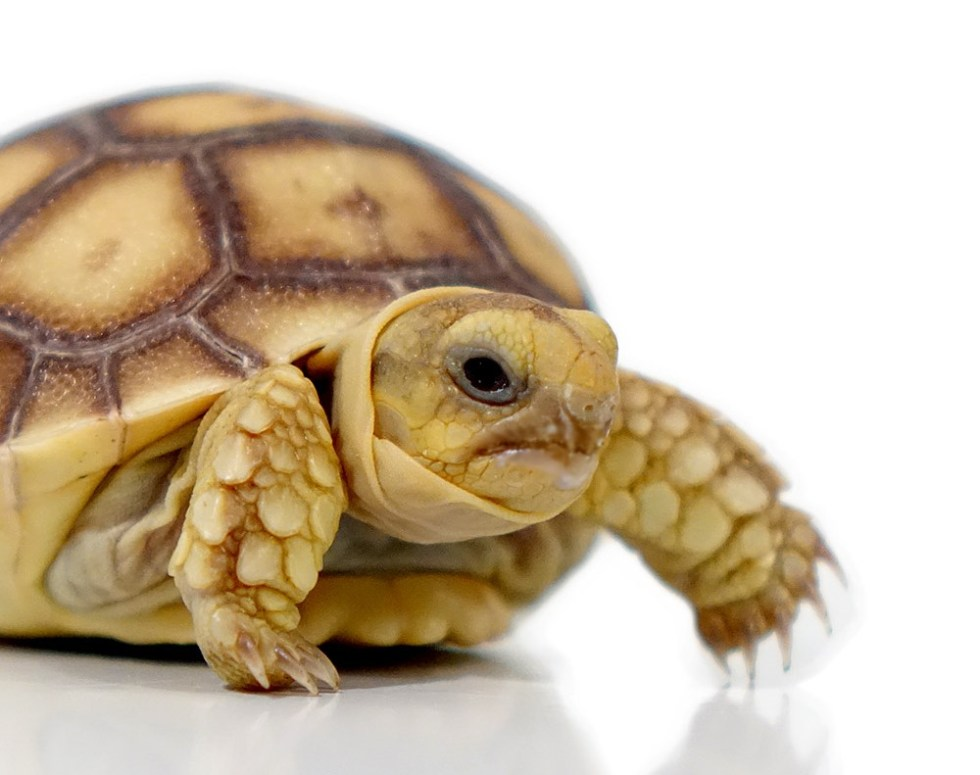
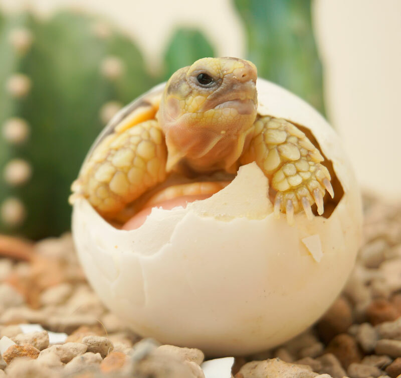

The Sulcata Tortoise

The Sulcata Tortoise is a gentle giant! Starting at the size of a small bouncy ball, they grow huge- to larger than your average chair seat.
To learn more about these tortoises and their care, click the links above!

